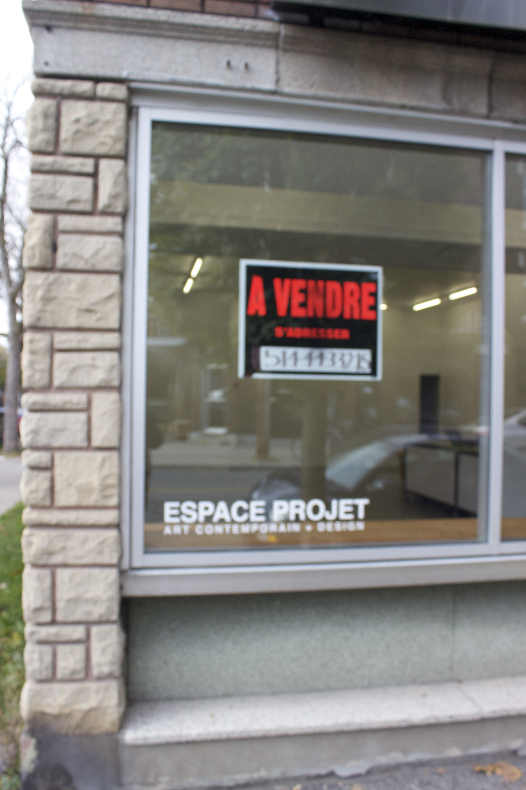
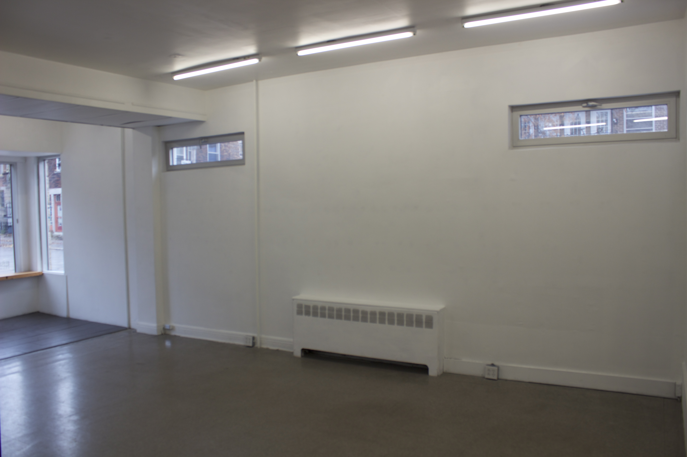
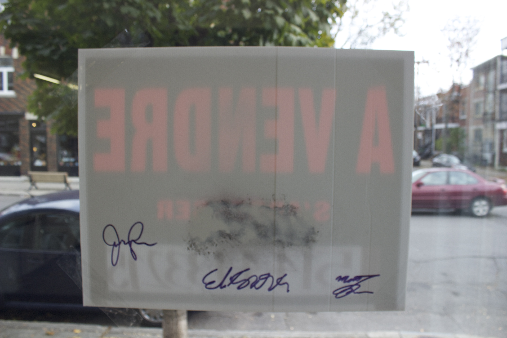
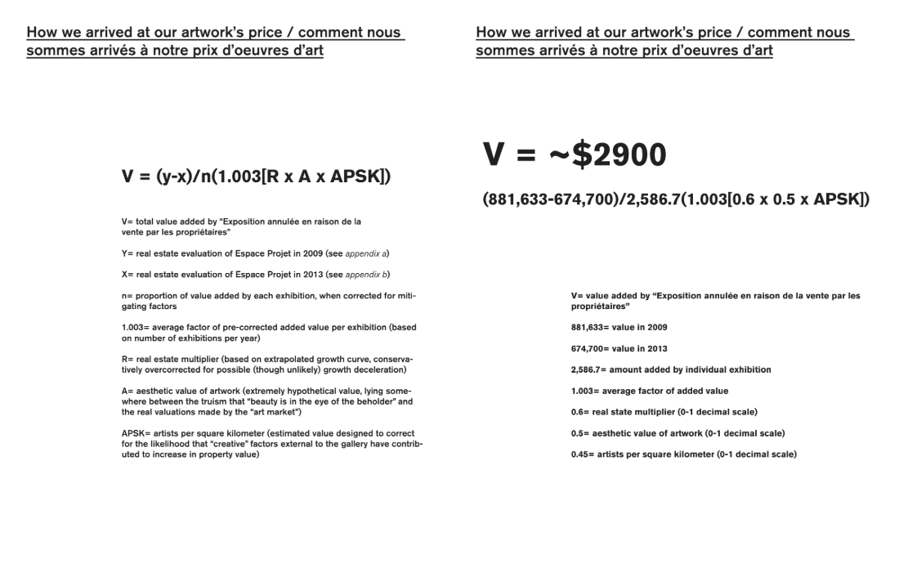

"Exhibition cancelled due to owners' decision to sell" (2013)
"Exhibition canceled due to owners' decision to sell" was a literal one-liner of a show. In 2013 my friends Julian Garcia, Eli Kerr, and I received an invitation to mount an exhibition at Montréal gallery Espace Projet. Building on local concerns about gentrification (especially project spaces, art galleries, and artists themselves driving up property values), plus a burgeoning interest in what I would later characterize as "critical trolling," we decided the show would be empty, except for a single "for sale" sign posted in the gallery window. We intentionally left it vague as to who the "owners" were and what, exactly, was up for sale. The idea was to lure would-be real estate speculators to an open house / vernissage, then haggle with them over the price of an unspecified referent object. For us, that object was the "for sale" sign itself. Ultimately, we used an algorithm that calculated the show's value-added to real estate speculators and determined the artwork to be worth 2900.00 CAD. We hoped this would serve as a playful way to stage a discussion about the local art scene and the real-estate market (agonistic "relational aesthetics"). Some literature was also available inside.
Documentation:

External view, 2013

Install view, 2013
 Untitled (growth distillate)
Untitled (growth distillate), by Julian Garcia, Eli Kerr, and Matt Goerzen, 2013

Untitled (growth distillate) [rear view], by Julian Garcia, Eli Kerr, and Matt Goerzen, 2013

back
Name Last modified Size Description
Parent Directory 28-May-2025 12:17 -
Early Work (2006-2009) 28-May-2025 14:30 963k artworks